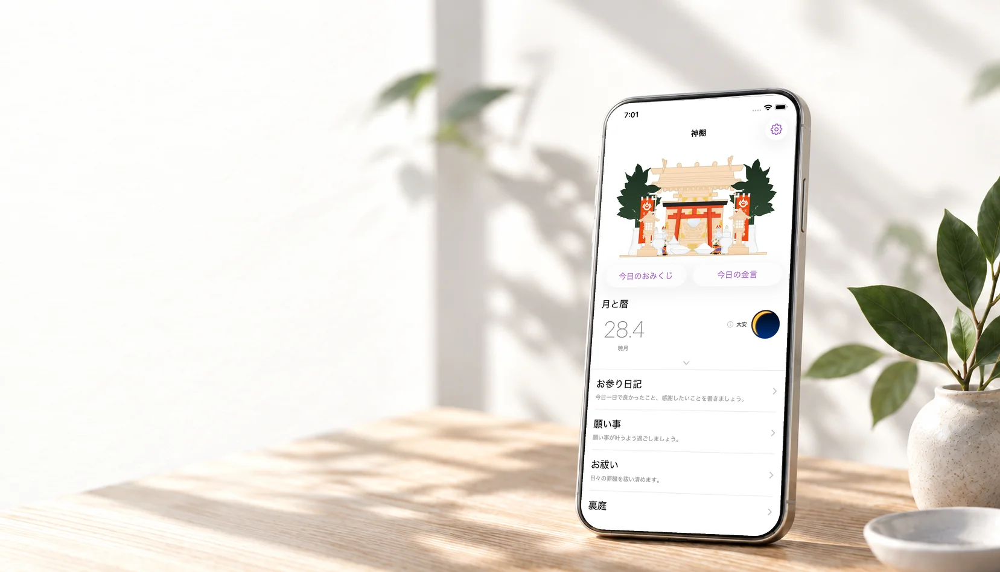
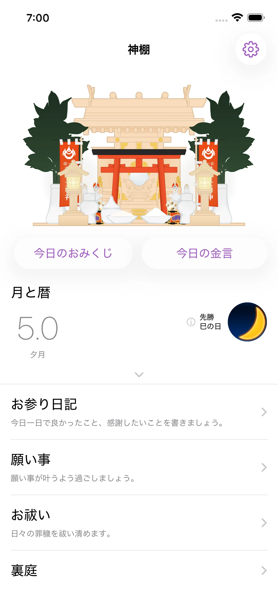
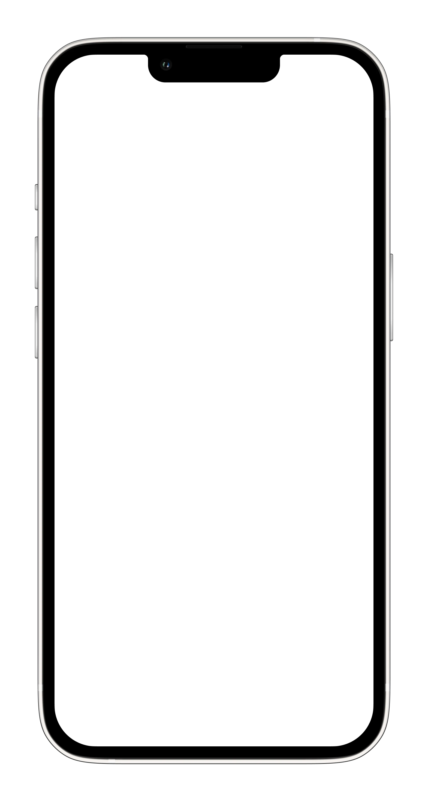
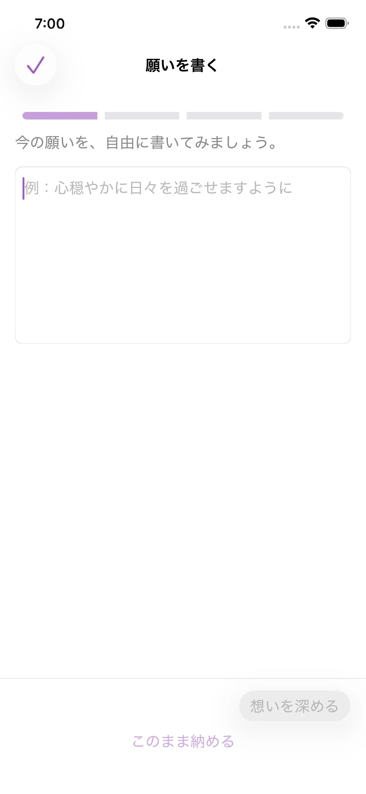
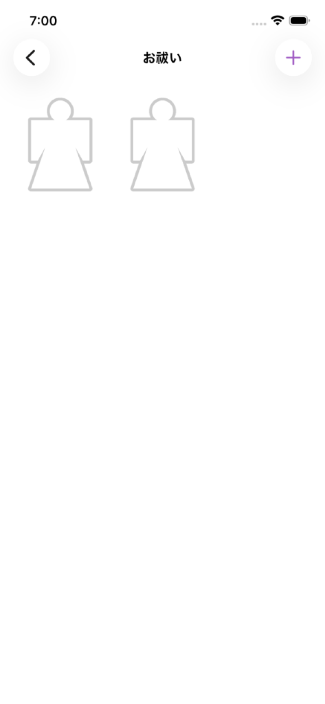

叶えたいことがあるとき
願いを言葉にして、神棚へ。頭の中だけで考え続けず、一度置いて、今日できることへ。

暦やおみくじを手がかりに、
願いを書き、モヤモヤを手放す。
占いで終わらない、スマホの中の小さな神棚。
基本無料 · iPhone / Android（アプリ内課金あり）
こんなときに。
願いを言葉にして、神棚へ。頭の中だけで考え続けず、一度置いて、今日できることへ。
暦やおみくじから、小さな手がかりを。何をするか決めてもらうのではなく、自分で決めるきっかけに。
言葉にして、形代へ。残しておきたくないモヤモヤを、小さな儀式で手放します。
暦やおみくじは、答えを決めてもらうためではなく、
自分で決めるための小さなきっかけです。
気持ちの置き場所。
考え続けなくていいように、
気持ちには置き場所が必要だから。
願いは託す。
感謝は伝える。
不安は祓う。
神棚アプリは、言葉を書くだけではなく、気持ちに小さな区切りをつける場所です。
願いも、感謝も。あなたのそばに、神棚を。
神棚アプリでできること。


お供えやお参りを通して、一日の中に小さな区切りをつくります。

叶えたいことを言葉にして神棚へ。自分でできることを見つけ、願いの変化をあとから振り返れます。

引きずっている不安やモヤモヤを形代へ。形代に書いた言葉は一日で消え、残しておかずに区切りをつけられます。
日記には、感謝やその日の気持ちを残せます。書いて振り返りたい日も、ただ手を合わせたい日も、自分のペースで使えます。
あなたのペースで。
大切な所作を、気軽に暮らしの中へ。
料金・提供内容はアプリ内でご確認いただけます。
MEDIA
神棚アプリは、以下のメディアや雑誌、Webサイトでご紹介いただきました。
毎日の良いことを振り返ることで、心が穏やかになるアプリとして紹介されました。
2020年1月号
「次世代の神棚」として、オンラインで毎日お参りできるツールとして掲載されました。
Vol.126（2021年3月号）
可愛らしいデザインと癒やしの世界観についてレビューいただきました。
ダイエットや美容をがんばる人の「心の支え」になるセルフケアアプリとして紹介されています。
「毎日を優しく穏やかに過ごすための心の支えになるアプリ」として掲載されています。
取材・レビュー・タイアップ等のご相談は、お問い合わせ窓口よりご連絡ください。
はじめる前に。
はい、宗教や宗派を問わず、どなたでも安心してお使いいただけます。神棚アプリは日本の祈りや感謝の文化に着想を得ていますが、特定の宗教への信仰や入信を促すものではありません。詳しい作法や知識を知らなくても、大切な想いや日々の感謝を、あなたの言葉で自由にお参りいただけます。
いいえ、公開されることはありません。願い事やお参り日記、形代に書いた内容はすべてご自身の端末内に大切に保存され、他のユーザーや運営に見られる心配はありません。あなただけの静かな記録として安心してお使いください。
いいえ、送信されません。アプリに書いた願いや日記、形代の内容を、外部のAIサービスに送信したり、AIの学習データとして利用したりすることは一切ありません。
はい、基本機能はすべて無料でお使いいただけます。毎日の参拝やお供え、おみくじ、願い事を託すこと、お祓い（形代）、お参り日記など、日々の所作は無料のまま続けられます。広告のない静かな空間でお参りしたい方や、日記のカレンダー表示、暦の詳しい読み解きなどを利用したい方向けに、プレミアム機能（有料）もご用意しています。
はい、毎日でなくても大丈夫です。願いを置きたい日、迷いや不安を手放したい日、ふと感謝を伝えたくなった日など、思い出したときにあなたのペースでお使いください。少し間が空いてしまっても、いつでも静かに寄り添います。
アプリ内のバックアップ・復元機能（無料）をご利用いただけます。大切な願いや日記の記録を引き継いで、新しい端末でも安心してお使いいただけます。機種変更の前に、アプリ内の設定からバックアップをお取りください。（※移行できるデータや操作手順は、ご利用のOSやアプリのバージョンによって一部異なる場合があります）
記録の取り扱いについては、プライバシーポリシーをご覧ください。
読みもの
一日の中に、小さな区切りを。
基本無料 · iPhone / Android（アプリ内課金あり）